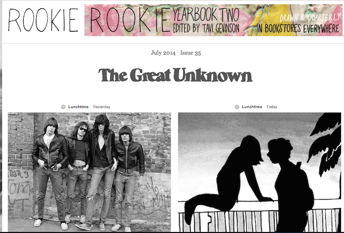
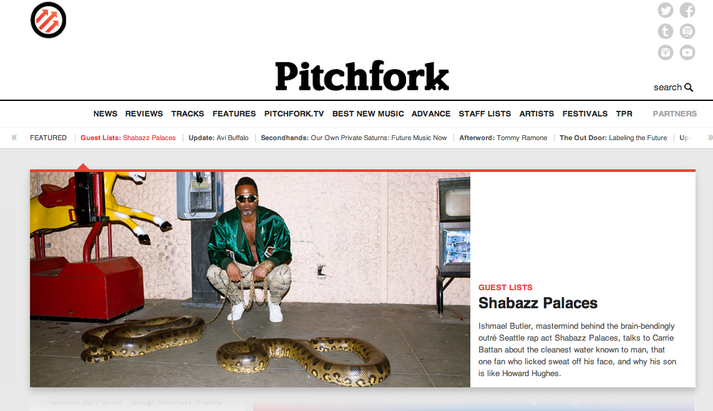
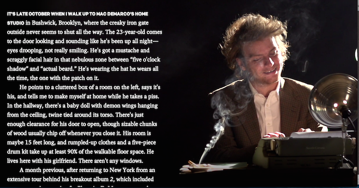
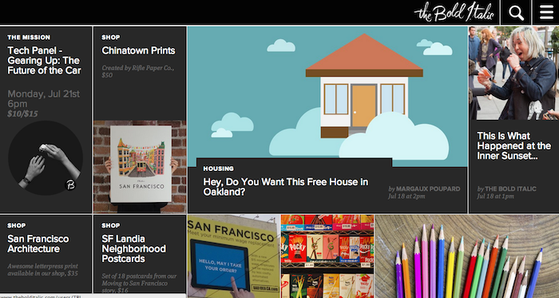

Sunday, July 20th, 2014
Week 1 Technical: My Three Favorite Websites
I tend to be drawn to websites that are visually minimalist and draw their users toward content in unique ways. The following are three of my favorite websites because of their unique and compelling design, engaging content, and unique user interfaces.
Rookie
Rookie is an online magazine geared toward teenage girls founded by the brilliant Tavi Gevinson. I was first drawn to the site by the amazing content; it features three daily posts on topics as wide-ranging as feminism, music, DIY tutorials, fashion, beauty, literature, movies, and more. It has a definite feminist and progressive slant, and it fills a niche in the current landscape of content for young women. Rather than pick up a copy of Cosmo and looking at a bunch of models that portray an unrealistic body image ideal, girls can check out Rookie's thoughtful and evocative photo essays, which promote a healthy and positive body image. Even though its target audience is teenage girls, I know I'm not the only adult woman to find the site extremely compelling, and to wish that a site like this had been around when I was a teenager!
On to the design: Rookie's homepage is constantly updating with new posts. When you land on the homepage, you'll see the month's content theme (this month is "The Great Unknown"), and the two most recent posts (accompanied by large, nice looking images). Scrolling down displays a simple list of recent posts: a thumbnail image along with post details like a summary, author, date published, and topic. The homepage is simple, uncluttered, girly, light, and elegant.
One thing I really like about Rookie is its format of three posts per day. The site assumes that readers are keeping up and reading each post, so it doesn't bend over backward to make it easy for you to find content on a certain topic, and instead posts thing in a simple chronological layout. However, one thing I appreciate is that when you're viewing a post, you'll see a comprehensive list of tags at the top of a post, which you can use to navigate to similar stories. By scrolling down, you'll also see a few recommended articles based on the one you’re viewing, as well as all the categories you can browse through.
Rookie's content, purpose, and focus can be described as empowering, feminist, girly, hopeful, and alternative. Their site visually complements the emphasis on empowerment, youth, and femininity.
Pitchfork
Pitchfork is one of the authoritative resources on contemporary indie music. Its website's content is primarily reviews of newly released albums, streaming of recommended individual audio tracks, and longer feature stories, many of which are accompanied by stunning web design elements. Pitchfork is something of a clearinghouse for new artists - being reviewed is a turning point in many bands' careers. It's one of my favorite sites because I am obsessed with music, and always try to keep up with Pitchfork's recommended albums and tracks. It is also an extremely well designed website - visually interesting, easy to navigate, and engaging.
On Pitchfork's homepage, there's a large graphic inviting viewers to livestream Pitchfork Music Festival (currently taking place in Chicago). Next, my eye is drawn to the News section toward the top of the page. It's interesting to note that the album reviews (which is what Pitchfork is primarily known for) are not highlighted on the home page. I suspect this may be part of their strategy to diversify content beyond album reviews. Visually, the site is bold, colorful, organized, image-friendly, and streamlined. I really like the bold, large images they use across the homepage. I can tell that it's a website that translates well to a mobile browser. I would describe the content, focus, and purpose of the website as current, hip, inclusive, cerebral, and serious. I think the visual design of the site complements the purpose and tone very well.
Browsing Pitchfork's site is extremely easy - there's a navigation bar at the top pointing to different categories, and each category has space on the home page to show the latest stories in that category. One thing Pitchfork does really well is cataloguing by artist. Simply searching an artist's name reveals an organized index of all the Pitchfork content on that person, including reviews, tracks, features, and news. Many of the features include really spectacular web design. A recent feature on Mac Demarco included interactive scrolling features, where scrolling down the page revealed more of an (often somewhat cheeky) image of the artist. Some images were moving gifs - one, for example, was the artist sitting at a typewriter, while his lit cigarette gave off smoke that actually billowed across the image. These features are optimized for reading and engagement - you would not want to read this via RSS feed and risk missing out on the really neat design.
The Bold Italic
The Bold Italic is a Bay Area lifestyle blog that focuses on San Francisco and Oakland. It posts articles about art, food, bars, politics, and social issues, all with a light-hearted and irreverent tone. While the writing isn't always the best, the site is really great visually - they employ some really ace designers who create custom images for each and every post. A recent example was a flowchart about transportation in San Francisco. The visuals are very cartoonish, which compliments the tone of the content.
The homepage is one of the greatest things about the Bold Italic. Rather than list recent posts, it displays them in interlocking rectangles, along with a large image and some summary text. This visual design reminds me of Windows 8 in some ways, and would translate well to mobile browsers. The design is clean, simple, elegant, colorful, and youthful. Initially, my eye is drawn to one of the rectangles, which they have made larger for added emphasis. It would be interesting to find out how they choose which post to emphasize (popularity, time posted, etc.).
Navigating the site is a bit tricky if you’re looking for something in particular. There's a search bar, and you can see what topics are trending, but there isn’t an obvious way to search by topic without going to an article of that topic and searching from there. It's a site that is more designed for casual looking around, rather than seeking out one particular topic or resource.
After being on the Bold Italic for a few minutes, I definitely feel like I have procrastinated. The content isn't quite as mentally stimulating as other sites, and it has a very "lowest common denominator" feel to it. That said, I enjoy the site immensely and often check it to find out about upcoming events in the city.